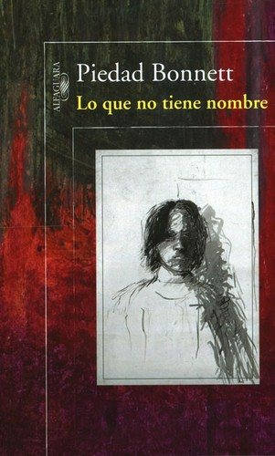

Lo que no tiene nombrePiedad Bonnett

Lo que no tiene nombre
Piedad Bonnett
La poeta colombiana escribe sobre la enfermedad mental y la muerte de su hijo. Un libro sobrio y profundo sobre el duelo.
- Ficha bibliográfica
- Open Library
Este libro tiene derechos de autor, así que no lo alojamos. Te dejamos la ficha para que sepas de qué trata y lo busques en una librería o biblioteca.
Duelo y pérdidasDuelo por la muerte de un ser queridoRelatos de vida y psicología narradaMemorias y autobiografías